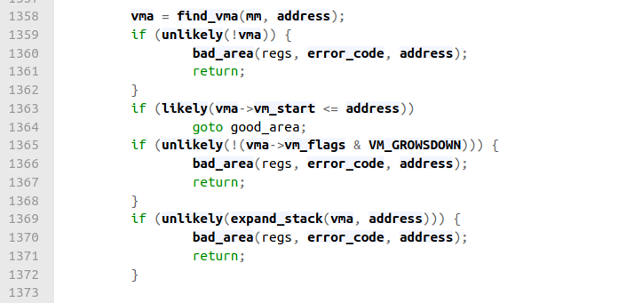

08/13/2023
This article is based on Linux v6.0.12 and the x86 architecture.
Intro
When a user process requests anonymous memory (not backed by a file) from the Kernel through a system call like malloc or brk, the Kernel expands the process's address space. A process's address space is defined by vm_area_struct instances, which describe memory regions. A process's address space is expanded by adding new memory regions or expanding the existing ones.When a userprocess's address space is expanded, the Kernel does not immediately allocate any physical memory for these new virtual addresses. Instead, the Kernel implements demand paging, where a page will only be allocated from physical memory and mapped to the address space when the user process tries to write to that new virtual memory address. If a page cannot be allocated from memory due to memory constraints, then the Kernel will swap out the least recently used pages onto disk at an area known as the swap space.
In this article, I'll be taking a look at the Linux Kernel code that handles page faults. I want to see how the Kernel allocates page frames and maps them into the address space of user processes.
Code Investigation
Up until Linux v6.1, the entry point in x86 for page faults was the assembly routine page_fault. However, this commit in 2020 did some rearranging. Figure 1
Figure 1
Now, the C entry point is DEFINE_IDTENTRY_RAW_ERRORCODE(exc_page_fault) in /arch/x86/mm/fault.c (code link).
For the 32-bit x86 architecture, the virtual memory address space has a 3:1 split, 3 GiB for user space addresses and the top 1 GiB for Kernel space addresses.
The Kernel uses some of this 1 GiB to directly map some of the physical address space.
By reserving this upper portion of memory for Kernel virtual memory address space, a Kernel thread can use the set of page tables of the last running process
process and avoid TLB and cache flushes.
Figure 2
Image source
Linux Memory Management Documentation.
[3]
Within DEFINE_IDTENTRY_RAW_ERRORCODE, we see a call to handle_page_fault(regs, error_code, address). This function checks whether the address that triggered the fault belongs to the Kernel's address space or the user's address space, and then calls do_kernel_addr_fault or do_user_addr_fault.
Figure 3
Code link
I'm interested in the case where a user process attempts to access a valid address in it's virtual address space for the first time. Thus, I'm going to skip to do_user_addr_fault (code link). This function begins with a few checks:
- Is this Kernel mode code trying to execute from user memory?
- Are the page table entry bits reserved bits valid?
- If SMAP is enabled, check for invalid Kernel access to user pages in the user addres space
- Are we in an interrupt? Ignore the fault if so.
- See if it's safe to enable irqs.
- Is this a fault in a vsyscall page that needs emulation?
After performing the above checks and acquiring the necessary locks, the Kernel acquires the memory descriptor, mm_struct, of the task that was executing when the page fault occurred, and looks for the memory region that contains the faulty address. Most of this logic happens in the find_vma function.
 Figure 4
Code link
struct vm_area_struct *find_vma(struct mm_struct *mm, unsigned long addr) is an interesting and important function. It's defined in /mm/mmap.c (code link). From "Understanding the Linux Kernel"[3]:
The find_vma() function acts on two parameters, the address mm of a memory descriptor and a linear address addr. It locates the first memory region whose vm_end field is greater than addr and returns the address of its descriptors.
Figure 5
find_vma()
Code link
This function reveals one cool thing about the way these memory region descriptors are stored. In addition to being stored in a sorted linked list, they're also stored in a red black tree. We get the root of the tree with the statement
rb_node = mm->mm_rb.rb_node;
and then we search through the tree with binary search. In a process with many memory regions, reducing the time complexity of this function from linear to logarithmic time is very important.
Let's step back up to figure 4, the code where we call find_vma. If we assume that the address is within a valid memory region of the process, we will enter the conditional
if (likely(vma->vm_start <= address)) and we will
goto good_area.
 Figure 6
Figure 6
First we check to see if there was an access error - e.g. the process tried to write to the address but it doesn't have write permissions. Assuming permissions are good, we call handle_mm_fault which does some more checks and then calls __handle_mm_fault(vma, address, flags, regs);. This function is located in /mm/memory.c and is common to all the different architectures (code link). This function is in charge of allocating page tables and page table entries for the virtual address that triggered the page fault.
Figure 7: The beginning of _handle_mm_fault
The vm_fault instance is used to store information about the page fault and pass it to handle_pte_fault. Five-level paging is now supported in many intel processors. With five level paging, a virtual address is split up the following way:
Figure 8
Image Source
Let's look at several key lines of _handle_mm_fault.
pgd = pgd_offset(mm, address);
This function returns the virtual address of the entry in the Page Global Directory that corresponds to the address.
p4d = p4d_alloc(mm, pgd, address);
This function allocates or returns an existing P4 Directory entry for the given address. Since P4 Directories are indexed by Page Global Directory entries, we're required to pass in the Page Global Directory entry that we found above. My assumption is that for architectures without five level paging, this just returns the Page Global Directory entry.
vmf.pud = pud_alloc(mm, p4d, address);
This function allocates or returns an existing Page Upper Directory entry for the given address. This entry is attached to the vm_fault instance.
vmf.pmd = pmd_alloc(mm, vmf.pud, address);
This function allocates or returns an existing Page Middle Directory entry for the given address. This entry is also attached to the vm_fault instance. This PMD entry allows us to access the last level in our paging scheme- the page table.
Once we've allocated the required page table entries to map the faulting virtual memory address, we call return handle_pte_fault(&vmf) (code link).
Let's look at the following lines from the handle_pte_fault function:
Figure 9
pte_offset_map accepts a pointer to a Page Middle Directory entry and a virtual address. It returns the address of the page table entry that maps the virtual address. Assuming that this is the first time the user process has tried accessing the address, the returned address would point to an empty, or uninitialized, page table entry. Let's look further down in the same function.
Figure 10
Since the page table entry hasn't been initialized, !vmf->pte will return true. Let's assume that the virtual address is part of an anonymous memory region, which means it's not backed by a file, as would be the case after a process attempts to use an address returned by the C stdlib function malloc. We'll enter do_anonymous_page (code link).
One of the first things do_anonymous_page does is allocate a page table entry.
Figure 11
pte_alloc accepts a memory descriptor and the address of a pmd entry. It will allocate and initialize a new page table entry (with the User/Supervisor flag set) and return the virtual address of it [3]. However, this entry will not have it's address field set yet.
On the Intel x86 architecture, a page table entry has the following format:
 Figure 12
Figure 12
Image source
The address field points to a physical memory address. This is the address that the
memory management unit translates the virtual address associated with this page table entry to.
This field leaves out the least significant 12 bits of the physical address. This is because page table entries
are aligned to Page boundaries, which are at intervals of 4096 Bytes (2^12). Thus, the memory management unit can assert that the lower
12 bits of the address field are always 0.
Further down in do_anonymous_page, after the page table entry has been allocated, we see the following code:
Figure 13
This is the code that handles page faults on reads. We already know that the faulting virtual address maps to anonymous memory and that this is the first time this virtual address was accessed, which is why the page fault occurred. Thus, I think that the Kernel maps the page table entry to a common "Zero Page" and makes this page write protected. This will cause another Page Fault to occur when this page is written to. This is an example of Copy on Write behavior [1].
Right below the above code is where we handle page faults on writes. It starts with the following block:
Figure 14
The conditional if (unlikely(anon_vma_prepare(vma))) is used to make sure that the memory region described by vma has an anon_vma attached to it. This data structure is used to collect the regions which reference a given anonymous memory region into a doubly linked circular list. I'm not sure which other code path makes use of this list.
The allocation of anon_vma will only need to happen the first time we map a page frame into the anonymous region [3]. Therefore, the common case is that anon_vma already exists, which is why we give the compiler a "heads up" with unlikely.
The macro alloc_zeroed_user_highpage_movable(vma, vmf-address) is defined as alloc_page_vma(GFP_HIGHUSER_MOVABLE | __GFP_ZERO, vma, vaddr). This function will allocate a zeroed out page frame for us. This is a physical page of memory!
The Kernel code has a comment that describes the "GFP_HIGHUSER_MOVABLE flag:
"GFP_HIGHUSER_MOVABLE is for userspace allocations that the Kernel does not need direct access to but can use kmap() when access is required."
The kmap() function is used by Kernel code to map high memory pages into low memory. Recall that (on x86) low memory is the section of the Kernel virtual address space which directly maps the first 896 MB of physical memory, while high memory is physical memory that is not directly mapped into the Kernel's virtual address space, and which must be temporarily mapped into it.
The other flag, __GFP_ZERO, makes sure that we are given zeroed memory.
After the physical memory page is allocated, we create the page table entry value that we will insert into our newly allocated page table entry position:
Figure 15
Code link
The function make_pte generates a page table entry value that points to the newly allocated page. Refer back to figure 12 for the format of page table entries. Let's take a deeper look at this function.
This function, make_pte, has to get the physical address of the page in memory that the struct page instance is associated with. Then, it has to add in the page protection and status bits (vma->vm_page_prot) with simple bitwise operations.
Before we look at the source code for this function, let's recall how the Kernel stores struct page instances. In a FLATMEM memory model, there is a global mem_map array that maps the entire physical memory [5]. Each index in the array corresponds to a page frame number (PFN). For example, index 2 contains the struct page instance for page frame number 2. Now, assuming a 32-bit system with 4 GiB of memory and 4096 byte pages, then you will have 2^20 (1,048,576) page frames. Thus, this will be the number of page instances within mem_map array.
If you have a struct page instance, and you know its page frame number (pfn), then you can perform some arithemtic (pfn * 4096 bytes) to get the physical address that the struct page corresponds to.
Let's look at the source code for make_pte:
Figure 16
Code link
page_to_pfn in a FLATMEM model does some arithmetic to get the page frame number associated with a page:
((unsigned long)((page) - mem_map) + ARCH_PFN_OFFSET)
It subtracts the address of the first element in the mem_map array , which contains the struct page instance for the 0th page frame, from the address of the given page.
ARCH_PFN_OFFSET defines the first page frame number for systems with physical memory starting at addresses different from 0. [5]. In our case, we can assume that this value is zero.
Due to the behavior of C pointer arithmetic, the expression above will return us the index of the page instance within the mem_map array. This index is the page frame number! As seen in figure 16, this page frame number and the page protection flags are then passed to the pfn_pte function. This function generates a page table entry which points to the physical address of the page frame and has the page protection flags set
Let's look at the source code for pfn_pte:
Figure 17
Code link
In the first line, we calculate the physical address of the page frame. By shifting the page frame number to the left PAGE_SHIFT bits, we are multiplying the page frame number by the page frame size, 4096 bytes. This gives us the physical address of the page frame.
Now that we have a page table entry which maps our physical address, we can step back up to do_anonymous_page:
Figure 18
Code link
entry = mk_pte(page, vma->vm_page_prot
This is what we just covered above. It creates a page table entry for the given page with the proper page protection flags.
entry = pte_sw_mkyoung(entry)
I think that on most architectures, the hardware handles setting a page table entry's access bit. However, some architectures require the programmer to manually do this. For these latter architectures, I think that this function will set the access bit, while for the former architectures, it is a noop.
entry = pte_mkwrite(pte_mkdirty(entry))
If the access to the faulting memory address was a write, we set the Write and Dirty flags on the page table entry, to indicate that this page frame is writable and that it has been written to [2] [4].
If we skip to the end of the do_anonymous_page function, we see the following code:
Figure 19
Code link
Recall that vmf->pte is the page table entry that the faulting address, vmf->address, maps to. Thus, it's safe to assume that
set_pte_at(vma->vm_mm, vmf->address, vmf->pte, entry)
sets the actual value of the page table entry to the value of the entry that we created above.
update_mmu_cache(vma->vma, vmf->address, vmf->pte)
This looks like a noop on x86.
put_page(page)
I think that this just frees up memory associated with the in-memory representation of the page.
Conclusion
And there you have it. We traced the page faults from handle_page_fault to the end of do_anonymous_page. Along the way, we saw the Kernel- Acquire the memory descriptor associated with the user process that was running
- Get the virtual memory area of the address that the fault occurred on
- Create the required page table structures to map the virtual address to a physical address
- Allocate a page of physical memory
- Set the page table entry for the virtual address to point to our newly allocated page
References
- [1] "5.6 Page Faulting" chudov.com, [Online]. Available: https://www.chudov.com/tmp/LinuxVM/html/understand/node35.html [Accessed 6 January 2023]
- [2] “Architecture Page Table Helpers — The Linux Kernel documentation,” docs.kernel.org. https://docs.kernel.org/mm/arch_pgtable_helpers.html (accessed Aug. 07, 2023).
- [3] D. P. Bovet and M. Cesati, Understanding the Linux Kernel, 3rd Edition, O'Reilly Media, Inc., 2005.
- [4] “Paging - OSDev Wiki,” wiki.osdev.org. https://wiki.osdev.org/Paging
- [5] “Physical Memory Model — The Linux Kernel documentation,” www.kernel.org. https://www.kernel.org/doc/html/v5.2/vm/memory-model.html (accessed Aug. 07, 2023).